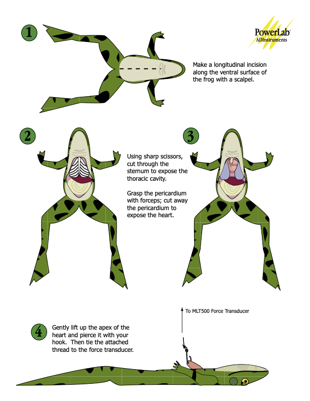
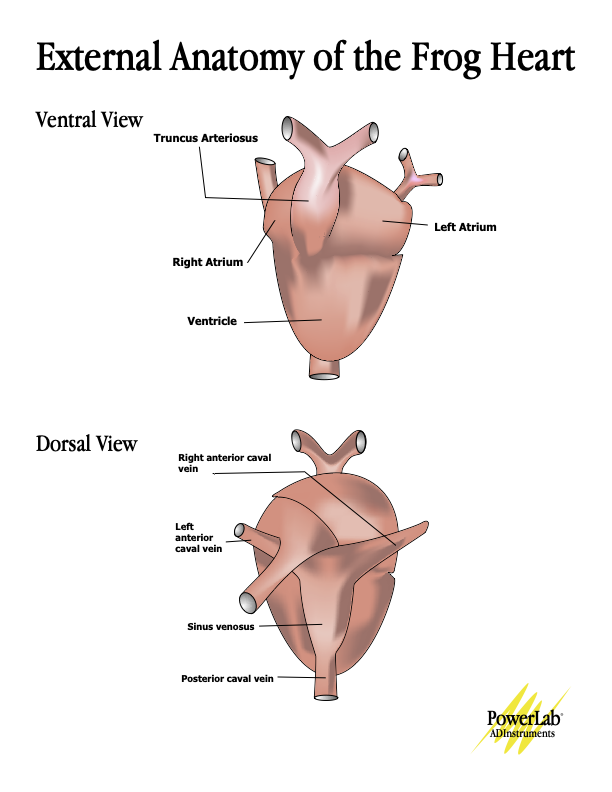

Lab 5: Physiology of the in situ Toad Heart
week 5
labs
ecg
cardiac cycle
heart
in situ
toad
electical impulse
Starlingʻs law
sympathetic
parasympathetic
ions
temperature
The physiology of a heart in action!
Before Lab
Prepare for lab by:
- This will be our first dissection lab. Itʻs really cool!
- Wear shoes to lab, and bring your dissecting kit (if you have one, otherwise we have supplies). Lab coat is not required but you are welcome to wear one if you wish.
- Read the lab manual for this weekʻs experiment [Lab 5] exploring the physiology of the toad heart using ECG and a force transducer.
- Write the [Prelab] in your lab notebook.
- Do Quiz 4 on Laulima (open 24 hrs before lab).
In Lab:
- Lab 5 manual [pdf] [docx]. Record data in your lab notebook. Use the guidance at the end of the lab manual to analyze your data in preparation for your results and discussion.
- Dissection guide [pdf]
- Toad heart anatomy. Note that amphibians have a 3-chambered heart! Two atria and one ventricle. [pdf]
 
After Lab:
- Individual Work Sheet due next week [pdf] [docx]
- You will include hypotheses (sections 1 and 2), mini results (section 3), and a regular discussion. On this lab WS, put a little more effort into the discussion. For each section we ask for, always follow the content guidelines: [grading guidelines] [old style]
- You are encouraged to analyze data with your lab members, and may develop figures together, but all writing must be your own work.